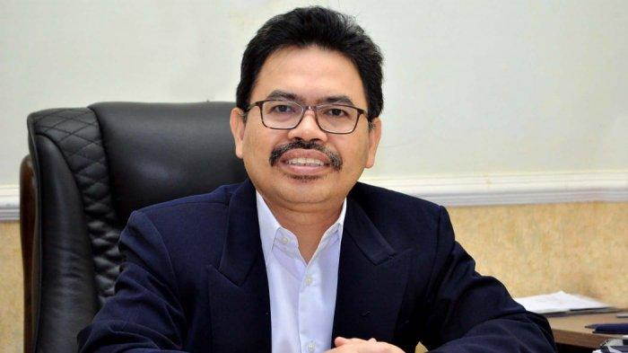

Libur Duniawi dan Surgawi
Oleh: Mujiburrahman Rektor Universitas Islam Negeri (UIN) Antasari
BANJARMASINPOST.CO.ID - Minggu ini akan ada libur panjang, dari 28 Oktober hingga 1 November 2020 (jika akhir pekan dihitung). Menurut KBBI, libur adalah “bebas dari bekerja atau masuk sekolah,” sedangkan berlibur adalah “bersantai-santai, bersenang-senang.” Karena itu, wajar jika orang merasa lega-gembira mendapatkan hari libur, apalagi libur panjang.
Namun, apakah santai tanpa kerja itu menyenangkan? Saya kira, meskipun Anda kaya raya, hidup tanpa kerja sangatlah membosankan. Pekerjaan, termasuk menjalani pendidikan, membuat orang merasa hidupnya berisi, bermakna dan bertujuan. Ketika Anda memejamkan mata di malam hari setelah bekerja di siang hari, Anda akan dapat tertidur pulas, bukan saja karena cape tetapi juga karena puas menjalani hidup. Besok pagi, Anda dengan ikhlas atau terpaksa, akan bangun pagi guna mengisi hari dengan bekerja lagi. Hal serupa takkan dirasakan oleh orang yang tak bekerja.
Bahkan, sebagian orang berpendapat, kebahagiaan surgawi di akhirat nanti juga bukanlah liburan abadi, melainkan pengalaman hidup yang terus bergerak-dinamis. Jika tidak, menurut pandangan mereka, kehidupan surgawi itu pun membosankan. Hal ini antara lain tercermin dalam sebuah cerpen yang kontroversial berjudul “Langit Makin Mendung” yang ditulis seseorang dengan nama samaran Kipandjikusmin. Cerpen yang diterbitkan majalah Sastra No. 8 (Agustus, 1968: 3-8) ini sempat menyeret H.B. Jassin sebagai pengelola majalah ke pengadilan.
“Lama-lama mereka bosan juga dengan status pensiunan nabi di sorga loka,” tulis Kipandjikusmin, menggambarkan para nabi yang dipimpin Muhammad SAW, yang memohon kepada Tuhan untuk turba ke bumi. “Refreshing sangat perlu. Kebahagiaan berlebihan justru siksaan bagi manusia yang biasa berjuang. Kami bukan malaikat atau burung perkutut. Bibir-bibir kami sudah pegal dan kejang memuji kebesaranMu; beratus tahun tanpa henti.”
Dalam dialog selanjutnya, Kipandjikusmin menggambarkan Tuhan berkata, “Apalagi yang kurang di sorgaku ini? Bidadari jelita berjuta, sungai susu, danau madu. Buah apel emas, pohon limau perak. Kijang-kijang platina, burung-burung berbulu intan baiduri. Semua adalah milikmu bersama, sama rasa sama rata!” Nabi pun menjawab, “Sesungguhnya bahagia lebih dari cukup, bahkan tumpah ruah melimpah-limpah.”
Tuhan bertanya lagi, “Apa sebenarnya yang kau cari di bumi? Kemesuman, kemunafikan, kelaparan, tangis dan kebencian sedang berkecamuk hebat sekali.”
“Hamba ingin mengadakan riset,” jawabnya lirih.
“Tentang apa?”
“Akhir-akhir ini begitu sedikit umat hamba yang masuk sorga.”
“Ah, itu kan biasa. Kebanyakan mereka dari daerah tropis kalau tak salah?”
“Betul, Kau memang Maha Tahu.”
Dari sudut pandang agama, memang terasa ada imajinasi yang agak liar dalam cerpen ini, apalagi dalam bagian-bagian selanjutnya. Dalam bayangan cerpen ini, surga itu laksana tempat berlibur abadi dengan kenikmatan fisik seperti di dunia. Ini tentulah gambaran awam tentang surga. Alqur’an memang memaparkan kebahagiaan surgawi semacam itu, tetapi diberi kata depan ‘matsal’ yakni perumpamaan, sekadar untuk mendekatkan paham kita. Sebuah hadis mengatakan, surga itu adalah sesuatu yang tak pernah dilihat oleh mata, didengar oleh telinga atau terlintas di hati manusia.
Terlepas dari hal itu, pandangan cerpen ini bahwa hidup bersantai-santai dan bersenang-senang tanpa kerja itu membosankan kiranya benar. Sebaliknya, bekerja terus-menerus tanpa henti juga tak kalah membosankan dan melelahkan. Bagaimanapun, kita perlu istirahat, masa jeda untuk berhenti sejenak sambil mengumpulkan tenaga untuk bekerja kembali. Libur adalah istirahat dalam arti mengalihkan pikiran dan kegiatan kepada sesuatu yang positif di luar kegiatan rutin. Berlibur tidak harus berarti pergi ke luar kota, tetapi membaca novel, berkebun, berkumpul keluarga juga bisa.
Alhasil, libur sesungguhnya peralihan aktivitas pikiran dan tubuh dari kegiatan rutin. Siapa pun Anda, orang berduit atau orang biasa, di masa Covid-19 atau bukan, peluang berlibur semacam itu selalu ada. Mungkin saja, kehidupan surgawi juga sejenis peralihan, laksana peralihan dari rahim ibu ke alam dunia ini. Peralihan mengandaikan kebaruan, dan kebaruan itu menyenangkan. Namun, peralihan bukanlah tujuan, tetapi jalan menuju tujuan. Surga bukan tujuan. Tuhanlah tujuan sejati.